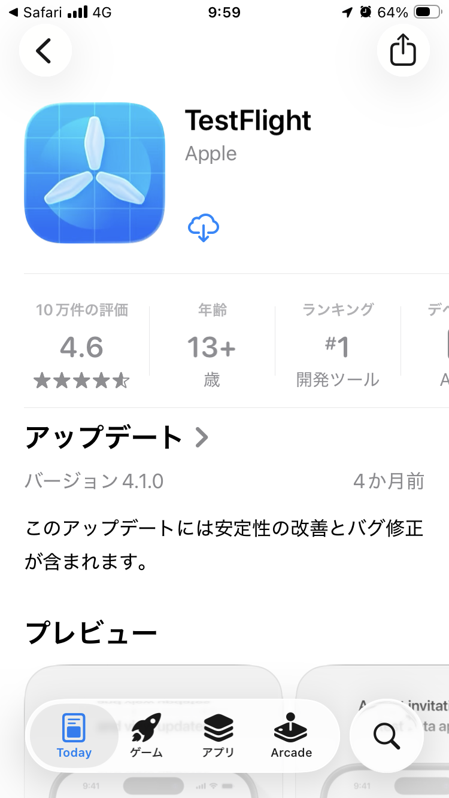
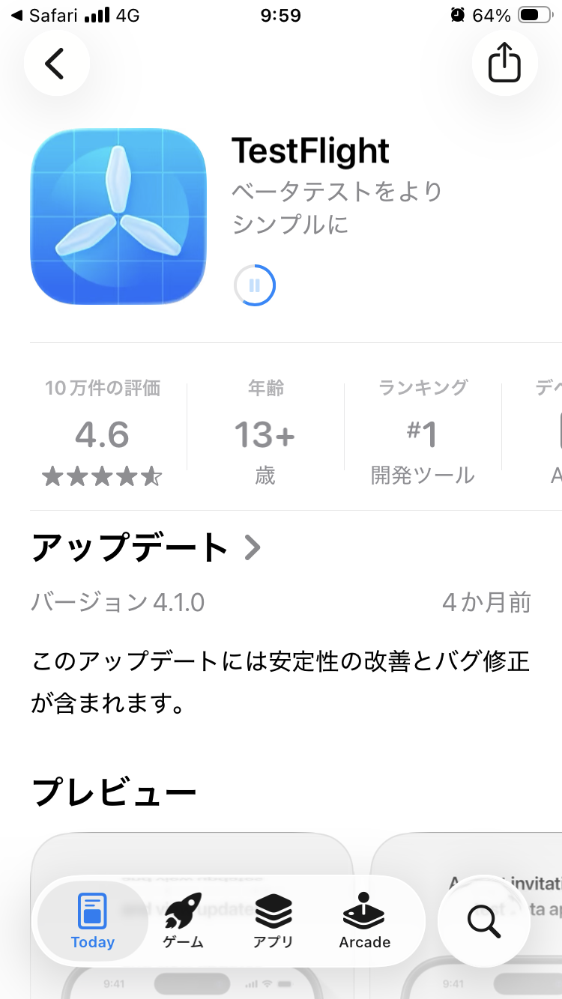
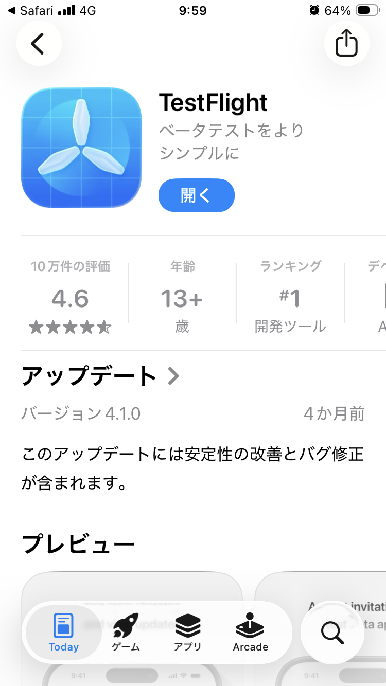
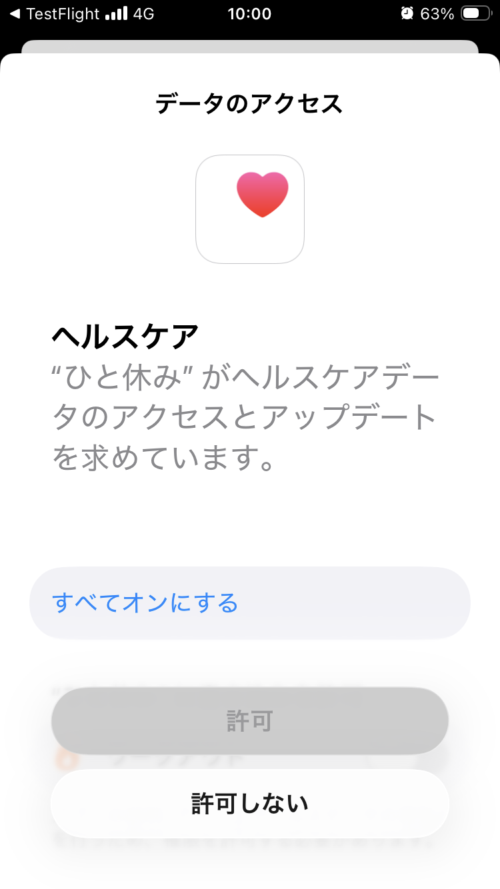
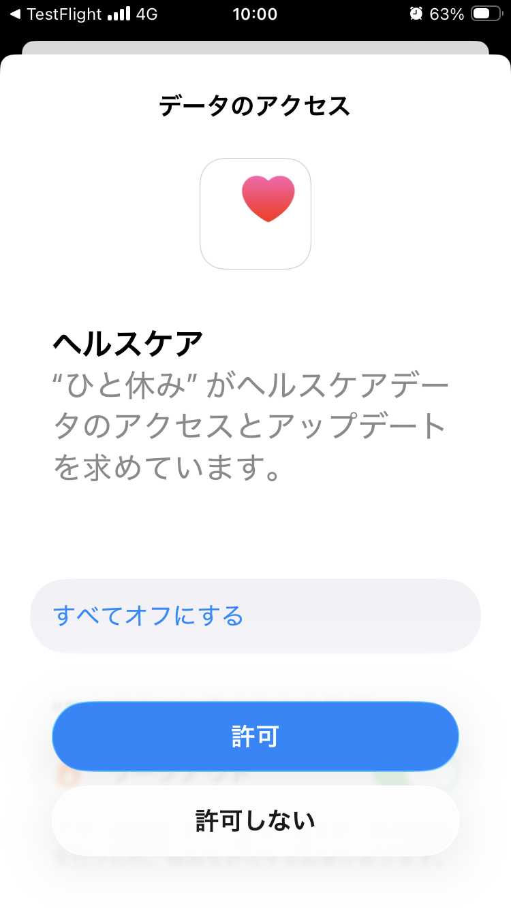
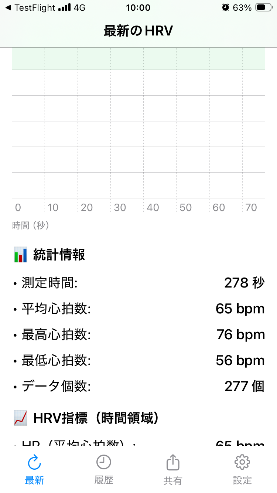
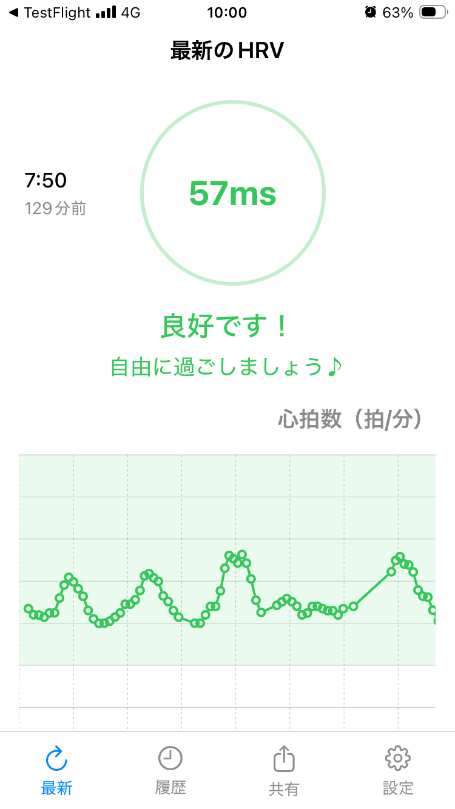

「ひと休み（ZenHRV）」アプリのインストールと初期設定手順
「ひと休み（ZenHRV）」アプリは、Appleのテスト用アプリ「TestFlight（テストフライト）」を使用してインストールします。以下の手順に沿って、TestFlightの準備からアプリの利用開始までを行ってください。
1. サイトからTestFlightアプリをインストールする
- iPhoneのブラウザ（Safariなど）で https://ikkozen.com/service
にアクセスし、画面下部の「Testflight でダウンロードする」をタップします。
- TestFlightの入手手順画面が表示されたら、App Storeへ進みます。
- App Storeで「TestFlight」アプリを入手（インストール）します。インストールが完了したら「開く」をタップします。



2. TestFlightの初期設定
- TestFlightを初めて開くと、通知の送信許可を求められます。「許可」をタップします。
- 「ようこそTestFlightへ」という画面が表示されたら、「続ける」をタップします。
3. 「ひと休み（ZenHRV）」アプリをインストールする
- TestFlightのアプリ一覧にテスト対象の「ZenHRV」が表示されます。「インストール」をタップします。
- インストールが完了したら、「開く」をタップしてアプリを起動します。
4. アプリの初期設定と利用開始
- アプリを起動すると「デベロッパから」というテスト内容の情報が表示されます。「続ける」をタップします。
- 「フィードバックを共有」という案内が表示されたら、「続ける」をタップします。
- ヘルスケアデータのアクセス許可画面が表示されます。「すべてオンにする」など必要な項目を選択し、「許可」をタップします。これにより、Apple Watch等から取得したデータが連携されます。


- 通知の送信許可を求められた場合は、「許可」をタップします。
- 初期設定が完了し、アプリのメイン画面（最新のHRV）が表示されます。これで「ひと休み」アプリの利用準備は完了です。

